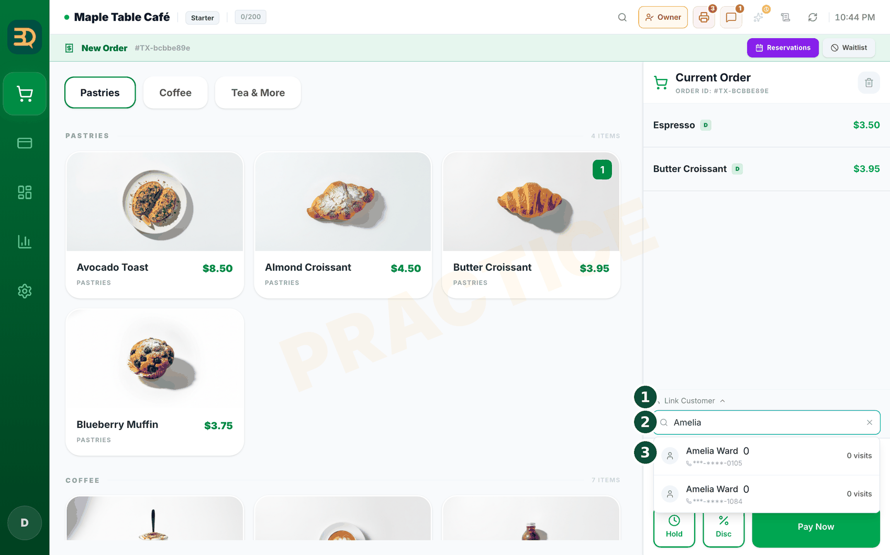
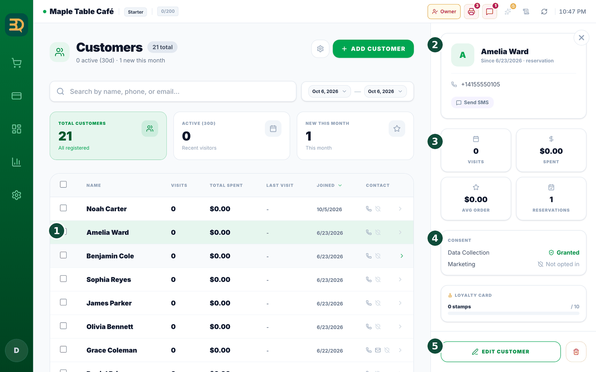

16顾客与会员积分
本部分帮助您让顾客再次光临。BrewDesk 会自动建立您的顾客名单，您还可以奖励回头客。
在哪里开启
在 Settings › Add-ons › Loyalty / Stamps 中开启会员印章（Pro 附加功能）；需要先开启 CRM/Customers（如有提示，点击 Enable Both（同时启用））。要使用候位名单功能，请开启 Settings › Add-ons › Waitlist（需要先开启 Tables）。


- 像平常一样点单即可。BrewDesk 会根据这些订单悄悄建立顾客名单。

- 随时点击顾客的姓名，即可查看他们的到访频率。
- 想奖励常客？请开启会员印章。这会给每位顾客一张电子印章卡（就像手机里的咖啡卡）。
- 顾客每次到访可获得一枚印章。集满足够的印章后，即可获得奖励，例如一杯免费饮品。
- 客人排队？使用候位名单保持队伍有序，桌位准备好时再发送短信通知。
值得展示
您的顾客名单会自动增长。无需纸张，也无需手动输入姓名。每一笔订单都会悄悄充实您的常客名单及其到访记录。
会员印章
设置方法与积分方式。手机上的印章卡：每次到访获得一枚印章，集满即可赢取奖励。以下说明如何设置和使用。

- 设置。打开
Settings › Add-ons，将 Loyalty / Stamps（积分 / 印章）卡片切换为 ON（开），然后点击卡片上的 Settings（设置）按钮。Loyalty（会员积分）界面会打开，包含两个标签页：Overview（概览）和 Settings（设置）。请在 Settings 标签页中设置印章数量和奖励。 - 选择集满多少枚印章可获得奖励（Stamps Required（所需印章数），例如 10）。
- 选择奖励——Free Item（免费商品）或 “% Discount”（% 折扣）——并为其命名。
- 选择奖励的有效期，然后点击 Save（保存）。
- 顾客如何获得印章：为顾客点单时，点击 Link Customer（关联顾客）并选中他们（或新增顾客）。订单付款后，他们即可获得一枚印章。
- 兑换奖励：印章集满后，奖励会显示在他们下一笔订单上——点击 Use Reward 即可从账单中扣除。
请先开启：会员积分需要先开启 CRM/Customers 附加功能（上方的提示框中已说明——如有提示，点击 Enable Both（同时启用））。